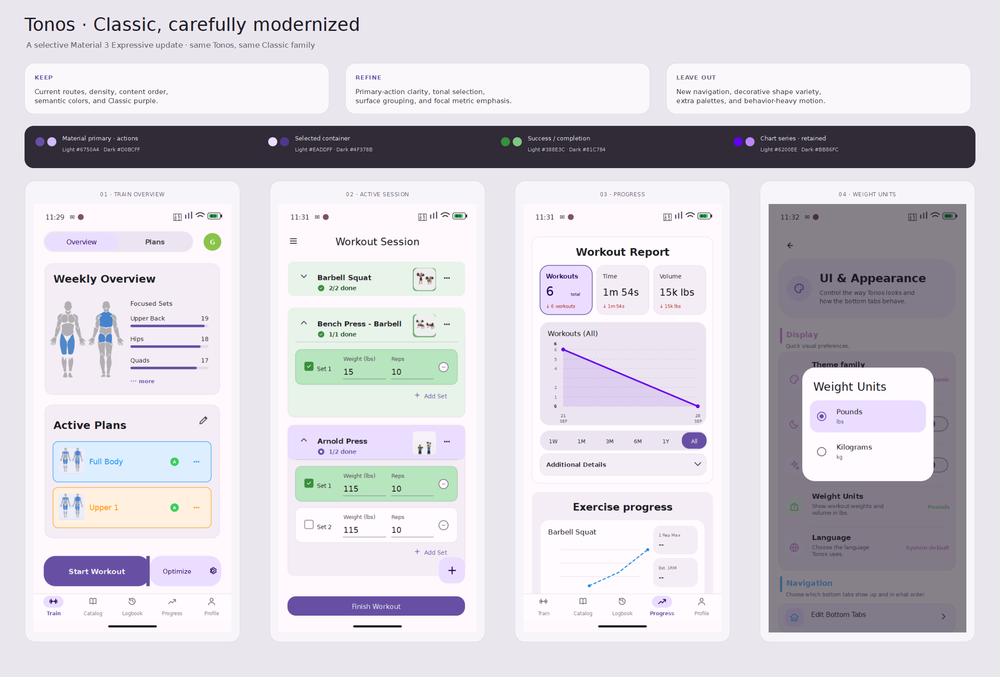
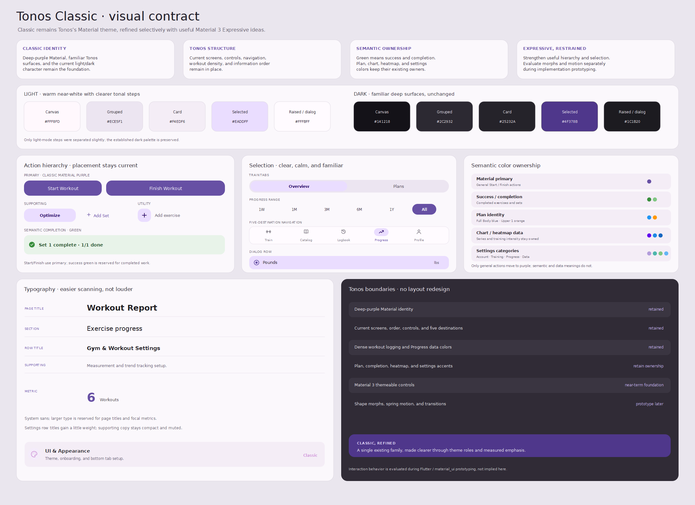
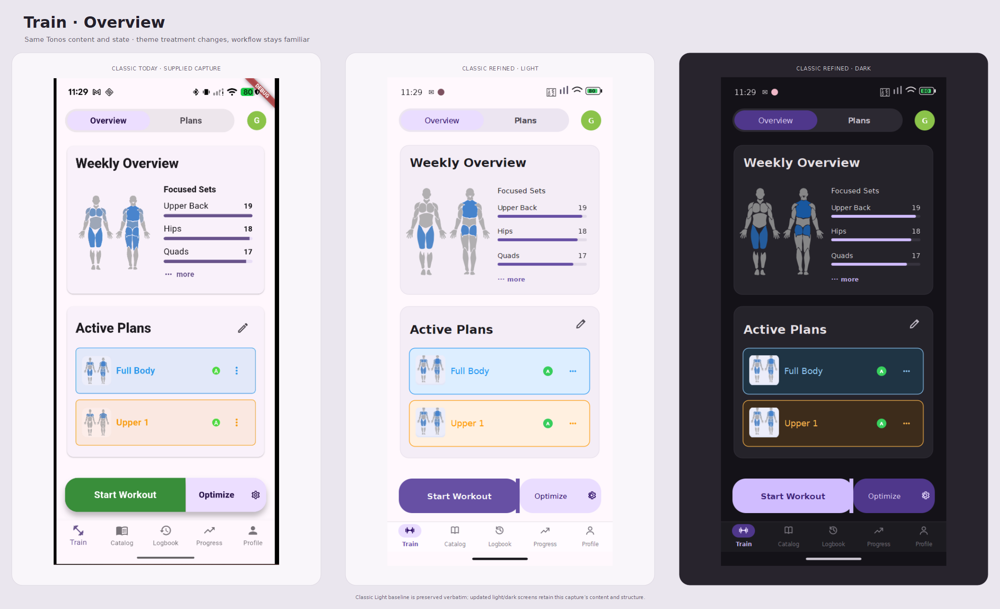
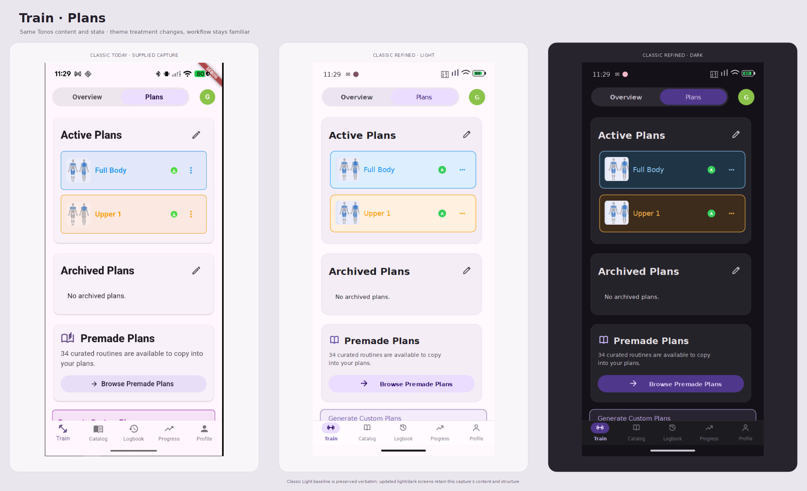
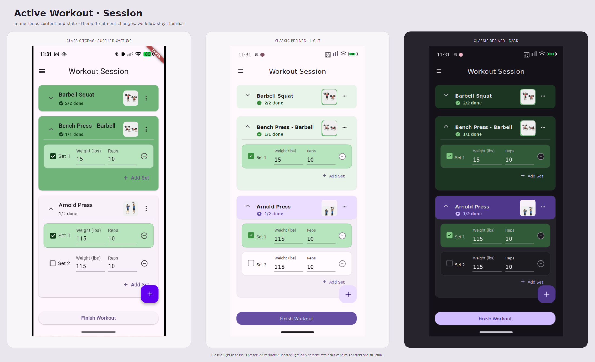
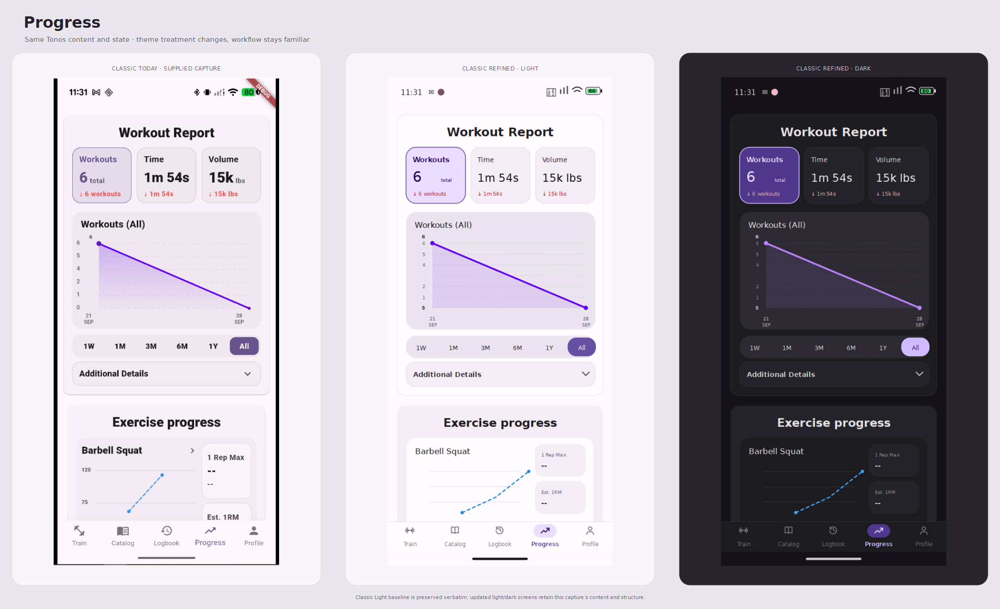
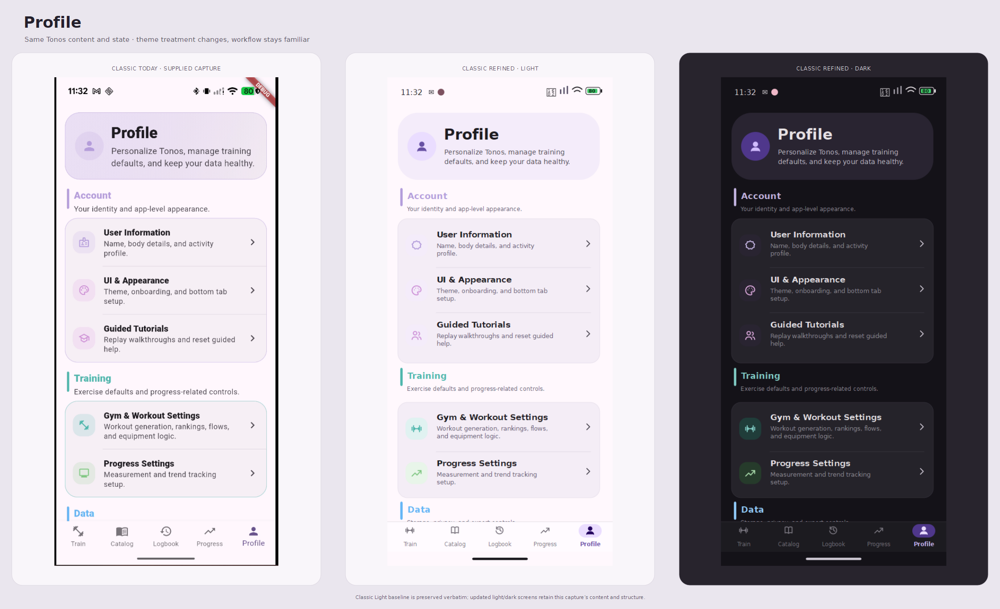
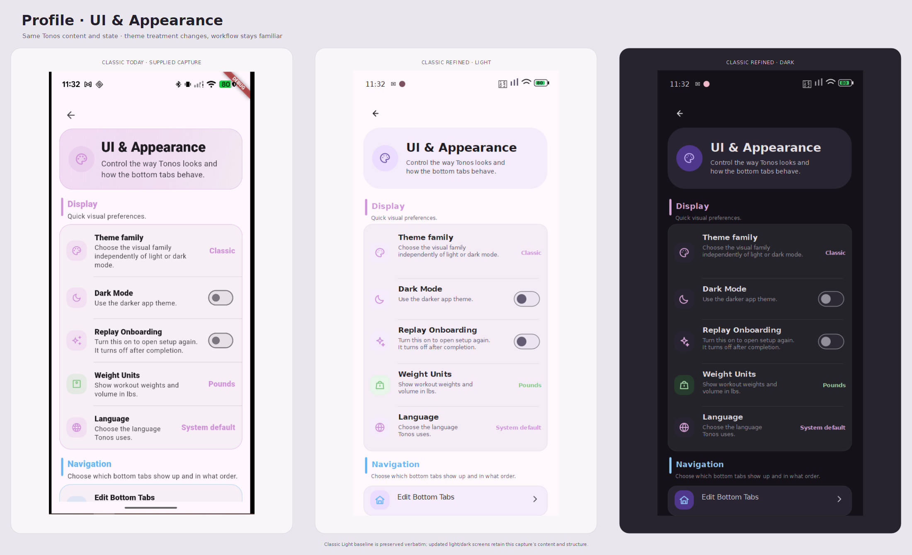
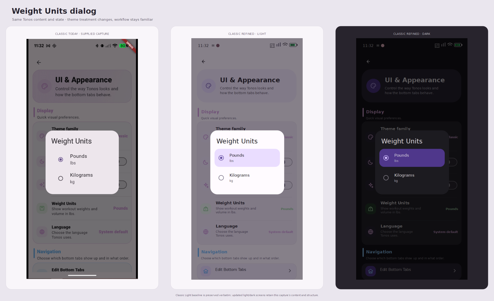

Standard Material 3
Colors, surface roles, selected states, buttons, cards, fields, switches, navigation, typography, and dialogs are standard themeable Material components.
What would today’s Tonos Classic look like with the useful parts of Material 3 Expressive? These boards keep the current navigation, content order, and screen density. Classic purple owns general actions; semantic green stays with successful and completed work.
Deep-purple Material stays the interface accent. Current screen structure, five bottom destinations, workout logging, section order, and data meaning stay familiar.
Purple primary actions are distinct from green completion states. Selected Workouts gets a clearer focal role, settings typography scans more easily, and light surfaces separate slightly better. The dense session logger stays efficient.

A compact visual contract for what remains Classic, where expressive emphasis is useful, and which semantic and data colors remain independently owned.

Each board uses the supplied Classic Light screenshot verbatim, next to a matching updated Light and Dark render. Screen state and visible content are held constant. Dark Mode remains off in the paired Appearance previews so its control state matches the supplied capture.
Overview selected; Weekly Overview, Focused Sets, Full Body and Upper 1, segmented Start Workout / Optimize action, and Train selected in the five-tab bar.

Plans selected; Active Plans, empty Archived Plans, Premade Plans, and the next Generate Custom Plans section beginning below the fold.

Barbell Squat 2/2 complete and collapsed; Bench Press - Barbell 1/1 complete with its set visible; Arnold Press 1/2 with two sets; pinned Finish Workout and add-exercise action.

Workout Report metrics 6, 1m 54s, 15k lbs; Sep 21–28 chart; All range selected; Additional Details; beginning of Exercise progress with Barbell Squat.

Profile hero; Account and Training groups; first Data heading; Profile selected in the five-tab bar.

Classic value; Dark Mode and Replay Onboarding off; Pounds; System default; Navigation section beginning below the fold.

UI & Appearance under the modal scrim; Pounds selected, Kilograms available.

Colors, surface roles, selected states, buttons, cards, fields, switches, navigation, typography, and dialogs are standard themeable Material components.
Use Classic purple for Start/Finish actions. Preserve semantic completion green, plan identity, profile-category, chart, and heatmap ownership while refining light surface steps.
State-to-state shape morphing, spring-driven interaction, and new navigation patterns are not implied by these static mockups.